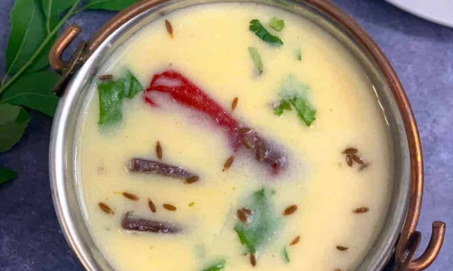
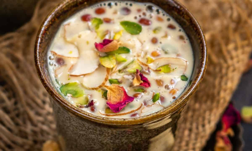
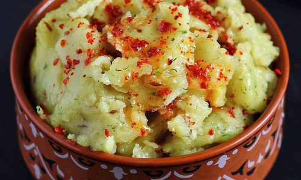
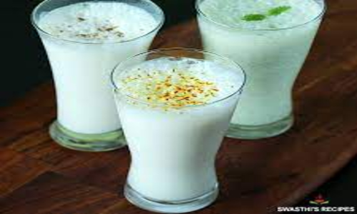

-

Gujarati Kadhi
Gujarati kadhi is a sweet tangy yogurt-based dish made with gram flour, spices, herbs and seasonings. This easy variant of kadhi is made without gram flour fritters (pakoda). It makes for a quick comforting lunch or dinner paired with a side of steamed basmati rice or roti.
-
Methi Thepla
Faintly bitter, and wonderfully spiced Methi Thepla are savory flatbreads that are delicious to enjoy as a delicious snack any time of the day.Plus, get tasty suggestions for some sides to eat with Methi Thepla! Try Thepla with lemon or Mango Pickle, Mango Chunda.
-
Methi Na Gota
Methi na Gota is a Gujarati deep fried snack of savory and spiced fritters. Basically these fritters are made with besan a.k.a gram flour, fenugreek leaves (methi), banana, spices and herbs. These tasty snack is usually served as a snack during tea time.
-

Basundi
Basundi is a popular dessert most commonly made in Western India, in such states as Maharashtra and Gujarat. It’s a bit similar to Rabdi, which is often served in North India. Enjoy basundi as it or with Puri.
-

Khichu
This is the QUICKEST snack that you have ever made. It is nothing but the cooked rice flour dough with few spices. If you take this dough one step further, meaning steam the dough then you can make rice papad out of it.
-
Mayonnaise Sandwich
Veg Mayonnaise Sandwich made with mixed veggies and mayo.Simple,quick and easy to make sandwich that makes for a great breakfast or snack.feel free to use any veggies of your choice to make sandwich.
-

Lassi
Lassi is a cooling, refreshing, probiotic drink perfect for the warm summer months. Popular in Punjab and North India, there are many variations of a lassi recipe, including mango lassi, dry fruits lassi, and malai lassi.
-
Cold Coffee
Frosty and satisfying Cold Coffee is a fantastic treat to enjoy on a warm day. This Cold Coffee recipe is a classic for preparing blended ice coffees that are perfectly sweet, creamy and frothy.
-
Chocolate Milkshake
Chocolate Milkshake is one of those milkshakes that is liked by both kids and adults alike. I share a super easy, quick and yummy way of making a Chocolate Shake recipe with cocoa powder, milk, sugar and chocolate ice cream.
 Home
Recipes
Contact
About
Home
Recipes
Contact
About